234万回
NEW
234万回
NEW
雨の日にひとりぼっちで鳴いていた『赤ちゃん猫』を保護…1年間の『成長記録』が234万再生「立派になったね」「泣けてくる可愛さ」
Excite エキサイト · 07 Nov
234万回
NEW
Excite エキサイト · 07 Nov
ねとらぼ · 07 Nov · @kaelimaeee ♥141,834
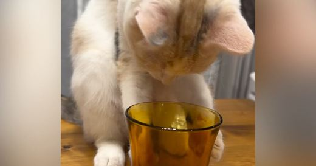
115万回 NEWExcite エキサイト · 06 Nov
Excite エキサイト · 06 Nov
 57万回
NEW
57万回
NEW
ライブドアニュース · 07 Nov
 52万回
52万回
千葉日報オンライン · 06 Nov · @fujikawaguchiko ♥5,691
 50万回
50万回
ねとらぼ · 06 Nov · @sui_clean ♥7,291
Excite エキサイト · 06 Nov
 25万回
NEW
25万回
NEW
Excite エキサイト · 07 Nov
BANGER!!!（バンガー!!!）映画評論・情報サイト · 06 Nov · @spidermanmovie ♥236,324
Yahoo!ニュース · 07 Nov
LIMO | くらしとお金の経済メディア · 07 Nov
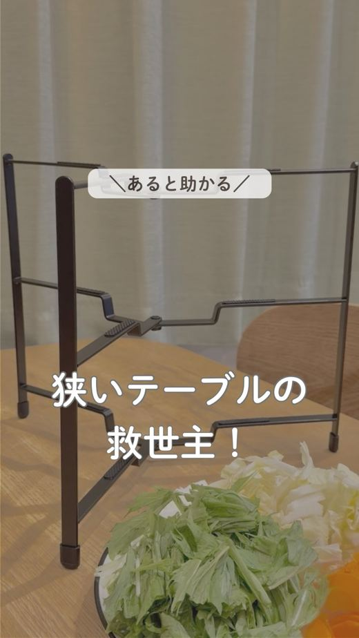
NEWねとらぼ · 07 Nov · @esumi_kurashi ♥18,066
Infoseek · 07 Nov

Yahoo!ニュース · 06 Nov
Howl.Link · 07 Nov
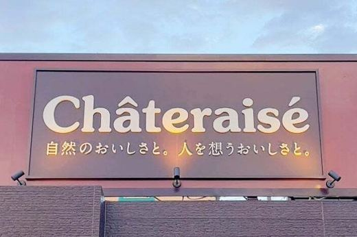
NEWYahoo!ニュース · 07 Nov
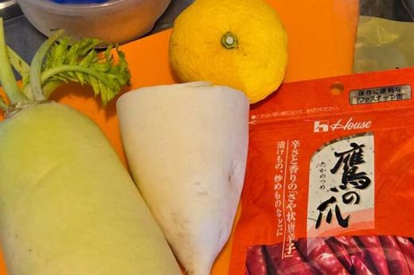
NEWｄメニューニュース · 07 Nov
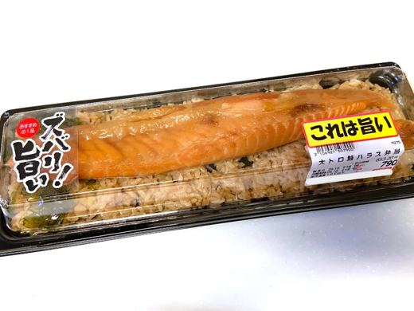
NEWau Webポータル · 07 Nov
Sirabee · 07 Nov
 305万回
305万回
ねとらぼ · 05 Nov · @yuririn_06 ♥2,333
MAQUIA · 07 Nov
LIMO | くらしとお金の経済メディア · 07 Nov
中日新聞Web · 07 Nov · @otani_emiri ♥48,931
CanCam.jp · 07 Nov
 50万回
NEW
50万回
NEW
Infoseek · 06 Nov · @sui_clean ♥7,291
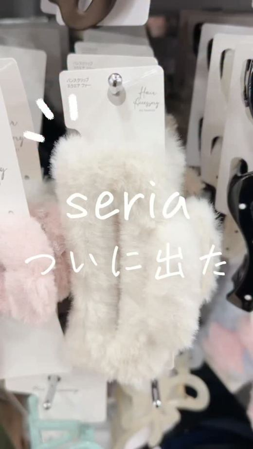
NEWau Webポータル · 07 Nov · @ririka_shimamura
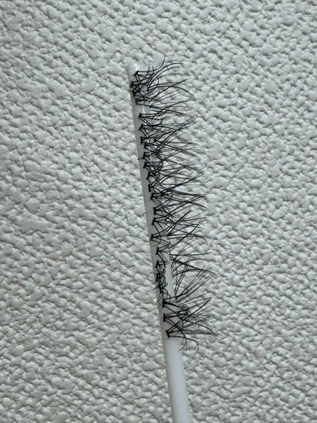
NEWYahoo!ニュース · 07 Nov
 NEW
NEW
LIMO | くらしとお金の経済メディア · 07 Nov
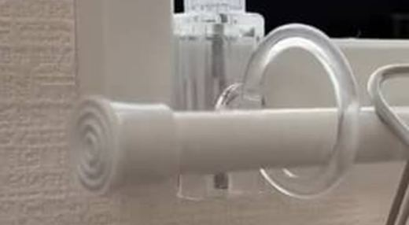
NEWヨムーノ · 07 Nov
株式会社 鶴屋吉信のプレスリリース 創業1803年・京都西陣の「鶴屋吉信」100年続く京銘菓から、自然の恵みをムダなく美味しくめ
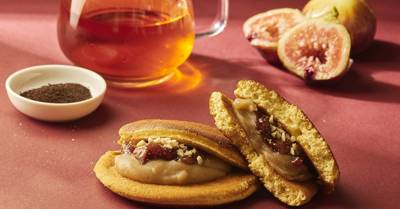
11/07 13:00 🚄 熊本株式会社ディテールアンドワークスのプレスリリース 〜毎朝職人が一枚一枚焼き上げる、ふかふか生地の新しいどらやき専門店〜 株式会社
株式会社Clearのプレスリリース フラッグシップ『百光』及び『百光 別誂』を各限定200本 日本酒ブランド「SAKE HUND
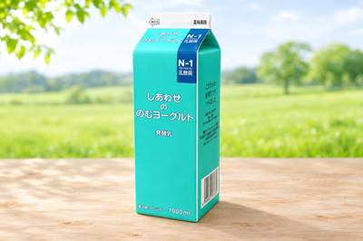
11/07 10:00 🚄 栃木日光霧降高原大笹牧場株式会社のプレスリリース N-1乳酸菌と低温殺菌乳を使用。酸味を抑え、毎日楽しめるヨーグルトドリンクに 日光
株式会社 若翔のプレスリリース 「ギルトフリーなおやつをもっと身近に」。そんな想いから生まれた「チアシード蒟蒻ゼリー」が10周年
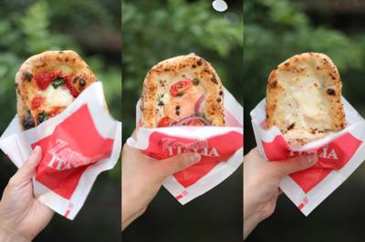
11/07 11:31 🚄 山口株式会社日本セレモ二ーのプレスリリース 秋バラが見頃を迎える蜂ヶ峯総合公園内のレストラン「ゾーナイタリア蜂ヶ峯店」で、11月2日
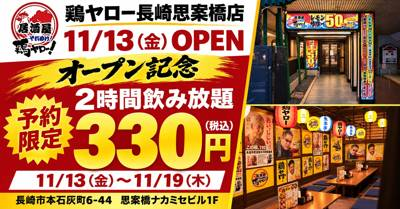
11/07 14:59 🚄 長崎株式会社鶏ヤローのプレスリリース 11月13日（金）〜19日（木）の7日間限定。思案橋ナカミセビル1Fに、提灯とポスターが彩るに
 11/06 23:09
🚄 神戸
11/06 23:09
🚄 神戸
早駒運輸株式会社のプレスリリース 開催日：2026年11月29日（日） 京都の名店を、神戸の海で味わう贅沢。神戸シーバス bo
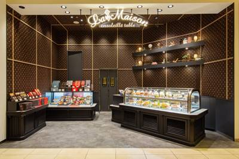
11/07 15:30 🗼 神奈川株式会社ピー・エス・コープのプレスリリース 株式会社ピー・エス・コープ（本社：神奈川県横浜市、代表取締役社長：佐々木達明）は、2
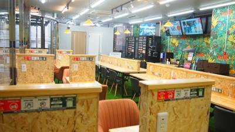
11/07 21:27 🚄 大阪ウッドデザインパーク株式会社のプレスリリース 会員登録・アプリ不要、ドリンク1杯で気軽に利用でき、Wi-Fi・電源も完備。横堤駅
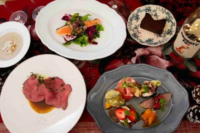
11/07 13:53 🚄 神戸株式会社ポトマックのプレスリリース 12月24日・25日はクリスマスコースのみでの営業となります。ご予約はお早めに。 神戸・旧居
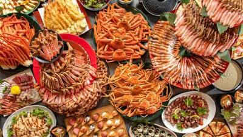
11/07 12:00 🚄 京都株式会社アウルコーポレーションのプレスリリース 今年も開催！佳松苑名物・豪快カニビュッフェ 株式会社アウルコーポレーション（別称
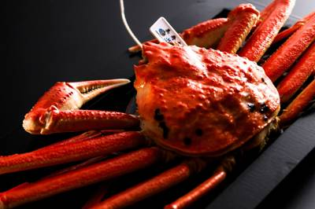
11/07 10:00 🚄 京都株式会社アウルコーポレーションのプレスリリース 丹後の旬と温泉で心身を整え、ドリンクインクルーシブで気ままに過ごす、冬の何もしな
株式会社ハチバンのプレスリリース 〜香箱かには年内55日間のみ！金沢の冬の主役を楽しめるのは今だけ～ 北陸を中心に８番らーめんや
APAMAN株式会社のプレスリリース 12月4日から東京クリスマスマーケット2026・芝公園会場で販売。第1弾は、ツリー・ミニリ
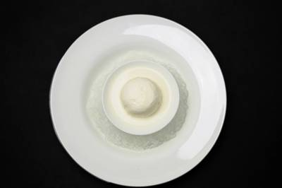
11/07 16:41 🗼 東京株式会社アマリージュのプレスリリース 2026年11月19日（木）〜23日（月）、World Wine Bar by Piero
株式会社 大丸松坂屋百貨店のプレスリリース ■2026年11月11日（水）→23日（月・祝） ■大丸梅田店 7階特設会場 大丸梅
イオンリテール中部カンパニーのプレスリリース イオンリテール中部カンパニー（以下、当カンパニー）は、１１月１３日（金）～１１月１
イオンリテール中部カンパニーのプレスリリース イオンリテール中部カンパニーは、１１月１３日（金）～１５日（日）の３日間、イオンモ
株式会社エスワイフードのプレスリリース 先着2,000名様にオリジナル取皿をプレゼント！手羽先ブランケットが当たる企画も 株式
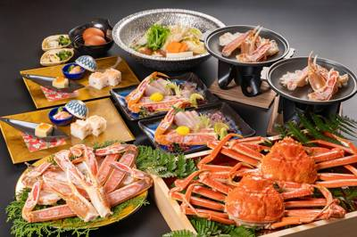
11/07 13:01 🚄 兵庫株式会社ぷらどのプレスリリース 茹で上がった松葉ガニの脚を、ぱきっと割って。白い身がするりと抜けて、口へ運べば…。 城崎温泉の「
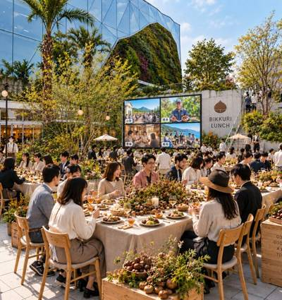
11/07 11:00 🚄 茨城有限会社春華堂のプレスリリース 〜そのひとくちに、森が宿る～ 都市と産地、過去と未来をつなぐ 一般社団法人和栗協議会（所在地：静
株式会社富士達のプレスリリース ～何杯飲んでもハイボール・サワーが各190円（税込209円）！ブタカルビなどの対象肉メニューも各
 11/07 11:10
🗼 東京
11/07 11:10
🗼 東京
日本ホテル株式会社のプレスリリース JCHAのオリジナルミニバッジを先着で、合計1000名様にプレゼント！ 東京駅丸の内駅舎の中
株式会社ぷらどのプレスリリース グラスに注いだロゼ。乾杯のひと口のあと、ソプラノの最初の一声が響いて…。 兵庫県淡路市の1日4組
株式会社髙島屋のプレスリリース 開催概要 ■会期：2026年11月17日（火）～23日（月・祝） ■会場：京都髙島屋S.C.（百
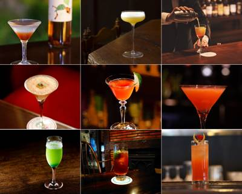
11/07 11:00 🌐 全国日本クラシックホテルの会のプレスリリース JCHAのオリジナルミニバッジを先着で、合計1000名様にプレゼント！
Not every angel can walk the VSFS runway, and that’s the whole trend. Creators are pairing this audio with the on-screen text “Not every angel can walk VSFS, some of us need to…” and finishing it with something way less glamorous (and way more relatable). It’s been all over our feeds since the show, and lowkey, we’re here for it.
“I just wanna make a lot of money and…” Now finish the sentence. Creators are setting Tate McRae’s “Housewife” over B-roll of their lifestyle, then revealing exactly how they’d spend the cash. It’s equal parts manifestation and mood board, and a great fit for lifestyle creators and brands selling an aspirational vibe.
音源: The Blue Danube Waltz – Royal Symphony Orchestra
Picture this: you’re in your PJs, doom-scrolling, and then, for absolutely no reason, you’re up and trying on a brand-new fit. This one’s giving fashion haul, but make it playful. Perfect for fashion and lifestyle creators (or brands) showing off their latest buys.